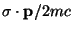
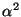
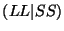
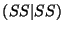
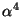

The implementation of approximate all-electron relativistic methods in
quantum chemical codes requires the removal of the negative energy states
and the factoring out of the spin-free terms. Both of these may be achieved
using a transformation of the Dirac Hamiltonian known in general as a
Foldy-Wouthuysen transformation. Unfortunately this transformation cannot be
represented in closed form for a general potential, and must be
approximated. One popular approach is that originally formulated by Douglas
and Kroll9.1 and developed by Hess9.2. This approach decouples the positive and
negative energy parts to second order in the external potential (and also
fourth order in the fine structure constant,  ). Another approach is
based on a modification of the Dirac equation by Dyall9.3, and involves an exact FW
transformation on the atomic basis set level9.4.
). Another approach is
based on a modification of the Dirac equation by Dyall9.3, and involves an exact FW
transformation on the atomic basis set level9.4.
Since these approximations only modify the integrals, they can in principle be used at all levels of theory. At present the Douglas-Kroll implementation can be used at all levels of theory whereas Dyall's approach is currently available at the Hartree-Fock level. The derivatives have been implemented, allowing both methods to be used in geometry optimizations and frequency calculations.
The RELATIVISTIC directive provides input for the implemented relativistic
approximations and is a compound directive that encloses additional directives
specific to the approximations:
RELATIVISTIC
[DOUGLAS-KROLL [<string (ON||OFF) default ON> \
<string (FPP||DKH||DKFULL||DK3||DK3FULL) default DKH>] ||
DYALL-MOD-DIRAC [ (ON || OFF) default ON ]
[ (NESC1E || NESC2E) default NESC1E ] ]
[CLIGHT <real clight default 137.0359895>]
END
Only one of the methods may be chosen at a time. If both methods are found to be on in the input block, NWChem will stop and print an error message. There is one general option for both methods, the definition of the speed of light in atomic units:
CLIGHT <real clight default 137.0359895>
The following sections describe the optional sub-directives that
can be specified within the RELATIVISTIC block.
The (spin-free) one-electron Douglas-Kroll approximation has been implemented. The use of relativistic effects from this Douglas-Kroll approximation can be invoked by specifying:
DOUGLAS-KROLL [<string (ON||OFF) default ON> \
<string (FPP||DKH||DKFULL|DK3|DK3FULL) default DKH>]
The ON|OFF string is used to turn on or off the
Douglas-Kroll approximation. By default, if the DOUGLAS-KROLL
keyword is found, the approximation will be used in the calculation.
If the user wishes to calculate a non-relativistic quantity after turning
on Douglas-Kroll, the user will need to define a new RELATIVISTIC
block and turn the approximation OFF. The user could also simply
put a blank RELATIVISTIC block in the input file and all options
will be turned off.
The FPP is the approximation based on free-particle projection
operators9.5 whereas the
DKH and DKFULL approximations are based on external-field
projection operators9.6.
The latter two are considerably better approximations than the former. DKH
is the Douglas-Kroll-Hess approach and is the approach that is generally
implemented in quantum chemistry codes. DKFULL includes certain
cross-product integral terms ignored in the DKH approach (see for example
Häberlen and Rösch9.7). The third-order Douglas-Kroll
approximation has been implemented by T. Nakajima and K. Hirao9.8. This approximation can be called using
DK3 (DK3 without cross-product integral terms) or DK3FULL (DK3 with
cross-product integral terms).
The contracted basis sets used in the calculations should reflect the relativistic effects, i.e. one should use contracted basis sets which were generated using the Douglas-Kroll Hamiltonian. Basis sets that were contracted using the non-relativistic (Schödinger) Hamiltonian WILL PRODUCE ERRONEOUS RESULTS for elements beyond the first row. See appendix A for available basis sets and their naming convention.
NOTE: we suggest that spherical basis sets are used in the calculation. The use of high quality cartesian basis sets can lead to numerical inaccuracies.
In order to compute the integrals needed for the Douglas-Kroll approximation the implementation makes use of a fitting basis set (see literature given above for details). The current code will create this fitting basis set based on the given "ao basis" by simply uncontracting that basis. This again is what is commonly implemented in quantum chemistry codes that include the Douglas-Kroll method. Additional flexibility is available to the user by explicitly specifying a Douglas-Kroll fitting basis set. This basis set must be named "D-K basis" (see Chapter 7).
The approximate methods described in this section are all based on Dyall's modified Dirac Hamiltonian. This Hamiltonian is entirely equivalent to the original Dirac Hamiltonian, and its solutions have the same properties. The modification is achieved by a transformation on the small component, extracting out . This gives the modified small component the same symmetry as the large component, and in fact it differs from the large component only at order . The advantage of the modification is that the operators now resemble the operators of the Breit-Pauli Hamiltonian, and can be classified in a similar fashion into spin-free, spin-orbit and spin-spin terms. It is the spin-free terms which have been implemented in NWChem, with a number of further approximations.
The first is that the negative energy states are removed by a normalized elimination of the small component (NESC), which is equivalent to an exact Foldy-Wouthuysen (EFW) transformation. The number of components in the wave function is thereby effectively reduced from 4 to 2. NESC on its own does not provide any advantages, and in fact complicates things because the transformation is energy-dependent. The second approximation therefore performs the elimination on an atom-by-atom basis, which is equivalent to neglecting blocks which couple different atoms in the EFW transformation. The advantage of this approximation is that all the energy dependence can be included in the contraction coefficients of the basis set. The tests which have been done show that this approximation gives results well within chemical accuracy. The third approximation neglects the commutator of the EFW transformation with the two-electron Coulomb interaction, so that the only corrections that need to be made are in the one-electron integrals. This is the equivalent of the Douglas-Kroll(-Hess) approximation as it is usually applied.
The use of these approximations can be invoked with the use of the
DYALL-MOD-DIRAC directive in the RELATIVISTIC directive block.
The syntax is as follows.
DYALL-MOD-DIRAC [ (ON || OFF) default ON ]
[ (NESC1E || NESC2E) default NESC1E ]
The ON|OFF string is used to turn on or off the
Dyall's modified Dirac approximation. By default, if the DYALL-MOD-DIRAC
keyword is found, the approximation will be used in the calculation.
If the user wishes to calculate a non-relativistic quantity after turning
on Dyall's modified Dirac, the user will need to define a new
RELATIVISTIC
block and turn the approximation OFF. The user could also simply
put a blank RELATIVISTIC block in the input file and all options
will be turned off.
Both one- and two-electron approximations are available
NESC1E || NESC2E, and both have
analytic gradients. The one-electron approximation is the default.
The two-electron approximation specified by NESC2E has some sub
options which are placed on the same logical line as the
DYALL-MOD-DIRAC directive, with the following syntax:
NESC2E [ (SS1CENT [ (ON || OFF) default ON ] || SSALL) default SSALL ]
[ (SSSS [ (ON || OFF) default ON ] || NOSSSS) default SSSS ]
The first sub-option gives the capability to limit the two-electron corrections to those in which the small components in any density must be on the same center. This reduces the  contributions to at most three-center integrals and the  contributions to two centers. For a case with only one relativistic atom this option is redundant. The second controls the inclusion of the integrals which are of order . For light atoms they may safely be neglected, but for heavy atoms they should be included.
In addition to the selection of this keyword in the RELATIVISTIC
directive block, it is necessary to supply basis sets in addition to the
ao basis. For the one-electron approximation, three basis sets are
needed: the atomic FW basis set, the large component basis set and the small
component basis set. The atomic FW basis set should be included in the
ao basis.
The large and small components should similarly be incorporated
in basis sets named large component and small component,
respectively. For the two-electron approximation, only two basis sets are
needed. These are the large component and the small component. The large component
should be included in the ao basis and the small component
is specified separately as small component, as for the one-electron
approximation. This means that the two approximations can not be run
correctly without changing the ao basis, and it is up to the user to
ensure that the basis sets are correctly specified.
There is one further requirement in the specification of the basis sets. In
the ao basis, it is necessary to add the rel keyword either to the
basis directive or the library tag line (See below for examples).
The former marks the basis
functions specified by the tag as relativistic, the latter marks the whole
basis as relativistic. The marking is actually done at the unique shell
level, so that it is possible not only to have relativistic and
nonrelativistic atoms, it is also possible to have relativistic and
nonrelativistic shells on a given atom. This would be useful, for example,
for diffuse functions or for high angular momentum correlating functions,
where the influence of relativity was small. The marking of shells as
relativistic is necessary to set up a mapping between the ao basis and the
large and/or small component basis sets. For the one-electron approximation
the large and small component basis sets MUST be of the same size and
construction, i.e. differing only in the contraction coefficients.
It should also be noted that the relativistic code will NOT work with basis sets that contain sp shells, nor will it work with ECPs. Both of these are tested and flagged as an error.
Some examples follow. The first example sets up the data for relativistic calculations on water with the one-electron approximation and the two-electron approximation, using the library basis sets.
start h2o-dmd
geometry units bohr
symmetry c2v
O 0.000000000 0.000000000 -0.009000000
H 1.515260000 0.000000000 -1.058900000
H -1.515260000 0.000000000 -1.058900000
end
basis "fw" rel
oxygen library cc-pvdz_pt_sf_fw
hydrogen library cc-pvdz_pt_sf_fw
end
basis "large"
oxygen library cc-pvdz_pt_sf_lc
hydrogen library cc-pvdz_pt_sf_lc
end
basis "large2" rel
oxygen library cc-pvdz_pt_sf_lc
hydrogen library cc-pvdz_pt_sf_lc
end
basis "small"
oxygen library cc-pvdz_pt_sf_sc
hydrogen library cc-pvdz_pt_sf_sc
end
set "ao basis" fw
set "large component" large
set "small component" small
relativistic
dyall-mod-dirac
end
task scf
set "ao basis" large2
unset "large component"
set "small component" small
relativistic
dyall-mod-dirac nesc2e
end
task scf
The second example has oxygen as a relativistic atom and hydrogen nonrelativistic.
start h2o-dmd2
geometry units bohr
symmetry c2v
O 0.000000000 0.000000000 -0.009000000
H 1.515260000 0.000000000 -1.058900000
H -1.515260000 0.000000000 -1.058900000
end
basis "ao basis"
oxygen library cc-pvdz_pt_sf_fw rel
hydrogen library cc-pvdz
end
basis "large component"
oxygen library cc-pvdz_pt_sf_lc
end
basis "small component"
oxygen library cc-pvdz_pt_sf_sc
end
relativistic
dyall-mod-dirac
end
task scf